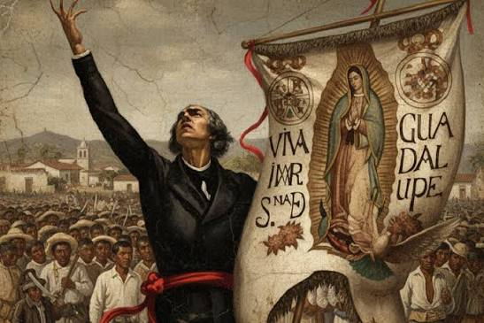

México fue colonia de España durante 300 años. Los españoles extrajeron gran parte de la riqueza del territorio y sometieron a la población local. El 16 de septiembre de 1810, el cura Miguel Hidalgo dio el Grito de Dolores, iniciando la lucha por la independencia. Tras su muerte, otro cura, José María Morelos, continuó el movimiento, aunque también fue ejecutado. Años después, Agustín de Iturbide unió a los rebeldes y firmó un acuerdo con Vicente Guerrero, logrando que España reconociera la independencia de México en 1821.
Tras la lucha, México dejó de ser una colonia de España y nació como una nueva nación libre. Este proceso debe celebrarse con orgullo, pues fue el resultado de una gran lucha heroica que dio origen a nuestro país.